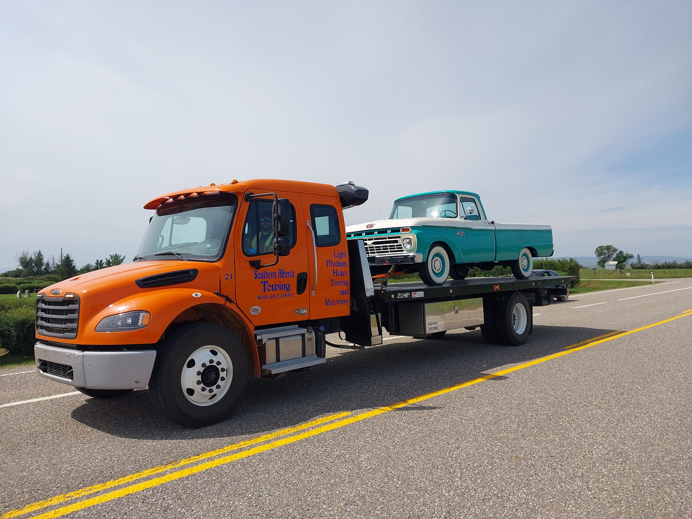
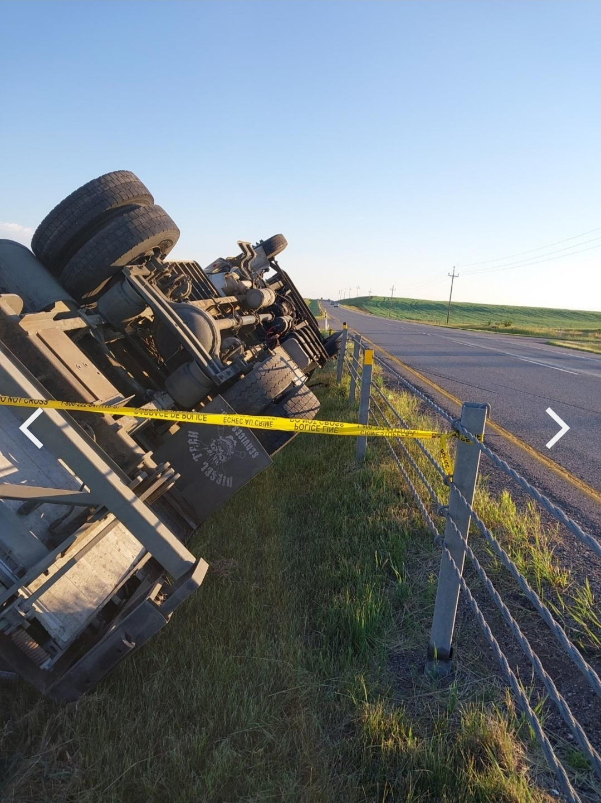
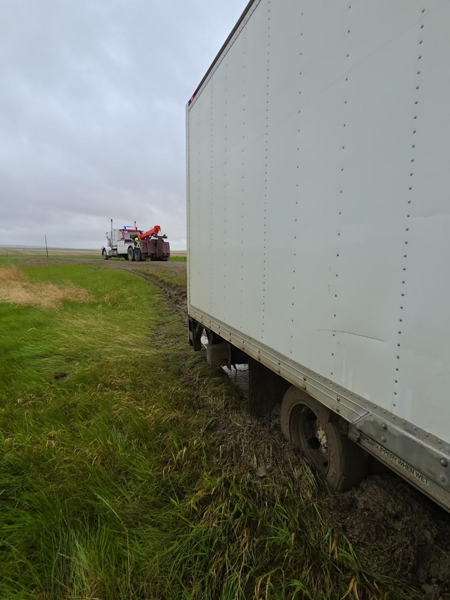
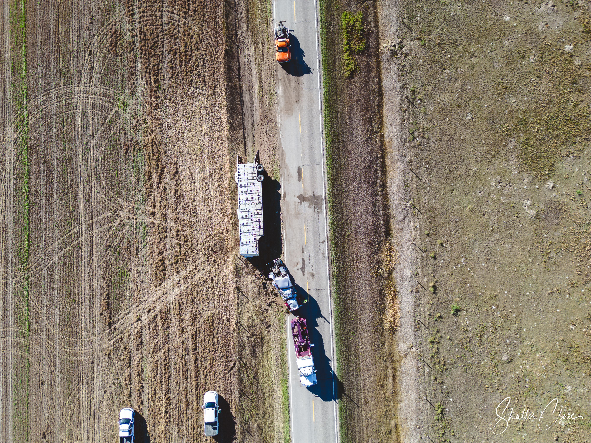
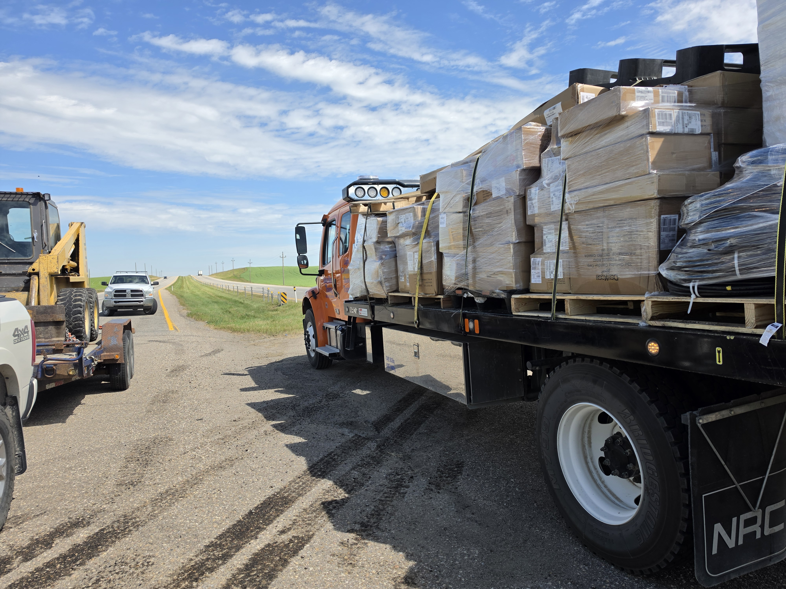
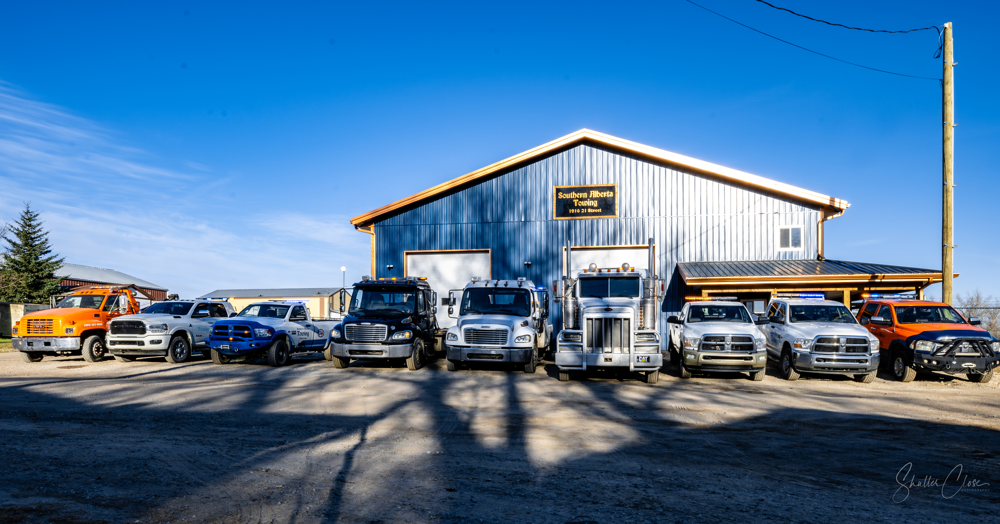

Vehicle Towing & Transport
Professional towing and transport for passenger vehicles, trucks, classics, projects and specialty vehicles.
Professional light, medium and heavy-duty towing, recovery and roadside assistance serving Southern Alberta.
From vehicle transport and roadside assistance to commercial truck recovery, Southern Alberta Towing has equipment for a wide range of towing and recovery situations.

Professional towing and transport for passenger vehicles, trucks, classics, projects and specialty vehicles.

Recovery capability for commercial trucks and challenging roadside incidents throughout Southern Alberta.

Recovery assistance for vehicles and commercial units stuck off-road or in difficult terrain.

Commercial incidents can require more than a standard tow. Southern Alberta Towing is equipped to respond to demanding recovery situations involving larger vehicles and commercial units.
We work with commercial operators and businesses requiring dependable towing and recovery support.
Our capabilities include accident recovery and assistance with cargo or loads following commercial vehicle incidents.
Commercial Assistance
Real equipment. Real recoveries. Our fleet is prepared for everything from everyday towing to challenging commercial incidents.

Based in Nanton, Alberta, Southern Alberta Towing provides towing, roadside assistance and recovery services throughout communities and highways across Southern Alberta.